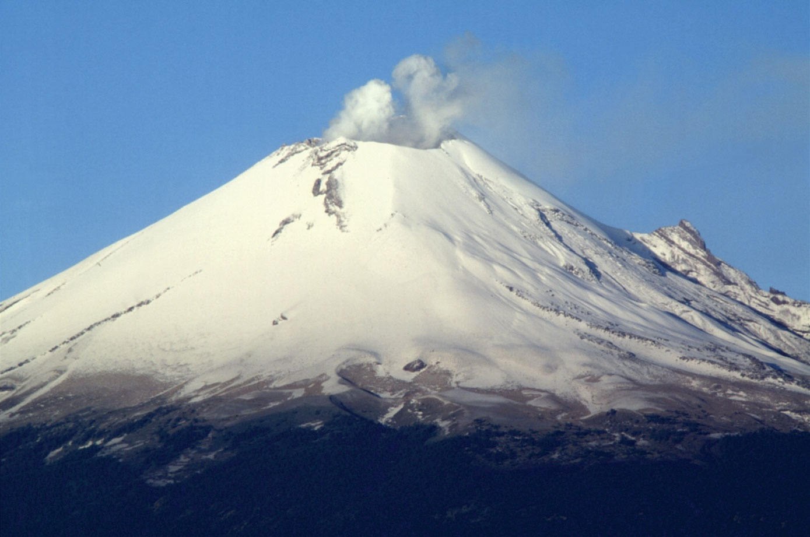
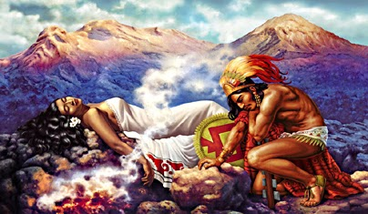

Historia del Popocatepetl
El primer ascenso registrado a este volcán fue hecho mucho antes de la época del Imperio mexica en 1289, por los Tecuanipas; el segundo ascenso hecho por los españoles fue dirigido por Diego de Ordás en 1519, para conseguir azufre para su pólvora.
El Popocatépetl ha sido uno de los volcanes más activos de México. Desde 1354 se han registrado 18 erupciones. En 1947 ocurrió una erupción de consideración, para iniciar así un periodo de actividad. Después, el 21 de diciembre de 1994 registró una explosión que produjo gas y cenizas que fueron transportados por los vientos dominantes a más de 25 km de distancia. Actualmente su actividad es moderada, pero constante, con emisión de fumarolas, compuestas de gases y vapor de agua, y repentinas e imprevistas expulsiones menores de ceniza y material volcánico. La última erupción violenta del volcán se registró en diciembre de 2000, lo que, siguiendo las predicciones de científicos, motivó la evacuación de miles de personas en las áreas cercanas al volcán. El 25 de diciembre de 2005 se produjo en el cráter del volcán una nueva explosión, que provocó una columna de humo y cenizas de tres kilómetros de altura y la expulsión de lava. Posteriormente en la mañana del 3 de junio de 2011, el Popocatépetl volvió a emitir grandes fumarolas sin causar daños. El 20 de noviembre de 2011 tuvo lugar una gran explosión que hizo temblar la tierra, escuchándose en las poblaciones cercanas a las laderas, pero sin mayor alteración. El volcán registró la mañana del 16 de enero de 2012 una fumarola de vapor de agua y ceniza, sin que esto represente riesgos para la población aledaña al coloso.
El 16 de abril de 2012 el CENAPRED (Centro Nacional Para la Prevención de desastres), elevó el semáforo de alerta volcánica de fase amarillo 2 a fase amarillo 3 debido a la gran actividad que se ha estado presentando, sin que hasta el momento represente un peligro grave para la sociedad.4
A las 3:23 del 30 de abril de 2013, el volcán Popocatépetl arrojó fragmentos incandescentes a 800 metros del cráter sobre la ladera noreste, informó el Centro Nacional de Prevención de Desastres (CENAPRED).
El 12 de mayo de 2013, luego del fuerte estruendo que se sintió en la localidad de Atlixco, la Coordinación Nacional de Protección Civil de la Secretaría de Gobernación, informó un cambio en el semáforo de la alerta volcánica, de amarillo fase 2 a fase 3 debido al incremento en la actividad del Volcán , por lo que entró en acción el Plan Operativo Popocatépetl, A través de un comunicado, la SEGOB dio a conocer que en una reunión con el Comité Científico Asesor, en el Centro Nacional de Prevención de Desastres (CENAPRED), que debido a que las dos semanas anteriores se observaron explosiones, eventos vulcano-tectónicos, episodios de tremor y trenes de exhalaciones, el Comité concluyó por consenso, emitir la recomendación. Sin embargo el 2 de junio de 2013 el CENAPRED regresó el nivel de alerta a Amarillo fase 2.
Los días 17 y 18 de junio el volcán registró varios eventos explosivos de mayor magnitud, registrando Fumarolas que alcanzaron los 4 km sobre el nivel del cráter y expulsiones de roca incandescente que alcanzaron las faldas en el lado Sur-Oeste del coloso. La alerta se mantuvo en Amarillo Fase 2.
El volcán entró en actividad el 7 de julio de 2013, lanzando ceniza claramente visible en poblaciones cercanas, la ceniza también alcanzó la Ciudad de México, expulsando flujos piroclásticos e incandescencia. El semáforo volcánico se sitúa en amarillo fase 3.
En 1994, los monasterios del siglo XVI, construidos en sus laderas, fueron declarados Patrimonio de la Humanidad por la Unesco.

Leyenda del popocatepetl
La leyenda de los volcanes nos cuenta la historia de un amor conformado por la princesa Iztaccíhuatl y el guerrero de su padre llamado Popocatépetl, él la amaba con locura, por eso el rey de la tribu le ordenó ir a una guerra y terminar con la vida del enemigo, algo que era totalmente imposible, pero si pudiera hacer este pedido su hija estaría libre para casarse con el amado, él regresó con lo que se le había encargado y todos celebraron aquel día.
En un momento Popocatépetl se da cuenta que Iztaccíhuatl estaba muerta, por eso es que la lleva hacia el monte donde los Dioses la convirtieron en un volcán inactivo, en ese momento él prendió una antorcha y tenía el corazón roto por su amor perdido, los Dioses se conmovieron de ellos y decidieron convertirlo en otro volcán que hasta el fin de sus días estaría cuidando a su princesa para que por lo menos en la muerte estén unidos.
